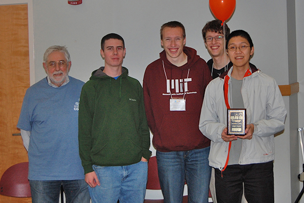
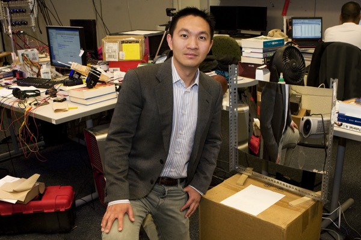
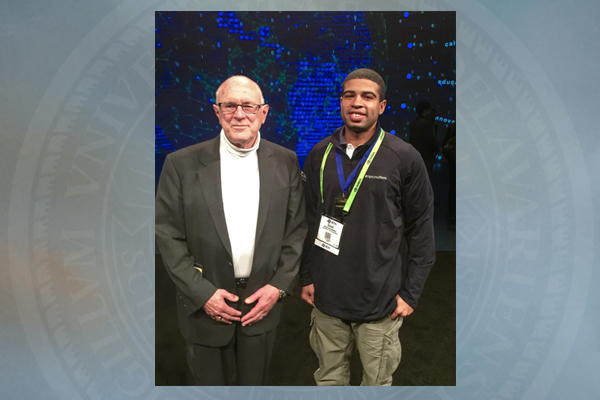

Dear UD CIS Community,
Welcome to the latest issue of our newsletter, CIS CONNECTIONS. We are
excited to bring you another collection of recent stories. Young people
among your friends and family may be planning applications for college
or graduate study. I urge you to discuss computer science-related
careers with them, and encourage them to check out our computer science
programs at UD! I also encourage your feedback and story ideas, please
feel free to submit them
here. I look forward to hearing from you.

Errol Lloyd,
Chair | Department of Computer & Information Sciences
Top Stories:

Impressive finish at ACM International
The University of Delaware programming team finished an impressive 11th
among 188 teams in the Mid-Atlantic regionals of the ACM International
Collegiate Programming Contest. Said team coach David Saunders,
professor of Computer and Information Sciences, “We are mightily proud
of our team’s excellent showing. They are game and they are good.”
Click here for the full story.
NSF award for search engine research
Ben
Carterette was awarded a prestigious Faculty Early Career Development
Award from the National Science Foundation to support research aimed at
brokering the perfect marriage between what a user is looking for and
what a search engine finds. The associate professor of Computer and
Information Sciences believes the key to making that marriage work is a
better understanding of how the user and the system interact with each
other. He hopes his research will help decrease the number of steps in
the internet search process, pointing users more quickly in the right
direction. Click here for the full story.

Prosthetics of the future with Google Glass
Professor Jingyi Yu and team are using Google Glass, a wearable
technology with an optical head-mounted display, for a more efficient
and affordable way to fit and manufacture leg braces and fabricate
prosthetics. The team has made three foot braces that, Yu says,
come close to the quality and precision of those created using more
traditional measuring methods. Their ultimate goal: to allow people to
take measurements and print prosthetics all from home, game-changing a
process that once took a half hour on a $50,000 machine in a clinician’s
office to one that takes 20 seconds at home with $1,500 Google Glass.
Yu is also using Google Glass to help analyze toddlers’ movements to for
earlier detection of delays and disabilities.
Click here for the full story and video.

Supercomputing 2014
UD enjoyed a
strong presence at the Supercomputing 2014 conference held in New
Orleans last fall with several students—both undergradate and
doctoral—and faculty members presenting research and serving as event
panelists or in leadership positions for the conference. Michela Taufer,
the David and Beverly J.C. Mills Career Development Chair of Computer
and Information Sciences, was the technical program co-chair of the 2014
conference, and will serve on the steering committee for the next three
years. Click here for the full story.